A · Lapis calm and dense (Zed, Linear)
- One blue-grey surface system at 13 px; only what waits for you turns pyrite gold (badge, wait time, hand glyph, bell).
- Home stacks horizontal strata: next-action bar, four-column stage board with compact cards, a four-up summary strip, events and restore.
- Closest to Zed and Linear: cards on a darker canvas, 10 px radius, mono only for numbers, paths and keys. Safest choice, least distinctive.
#0E1626#E6ECF7#5B8FE0#D4A84B#F6F8FC#14213D#26619C
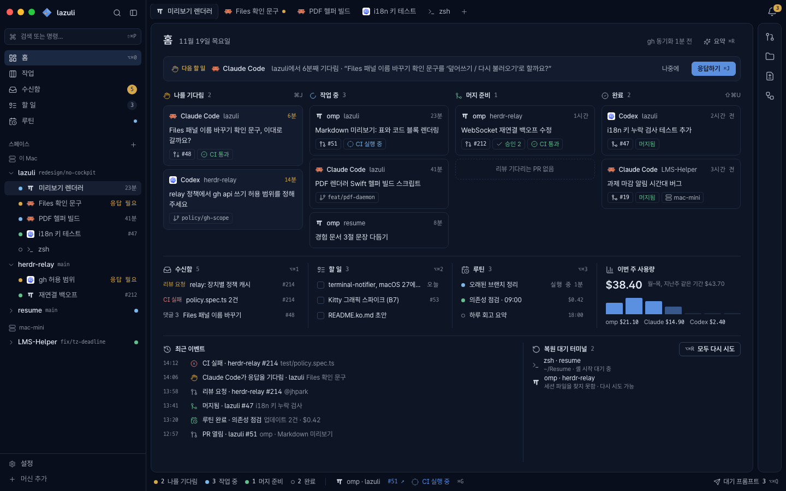
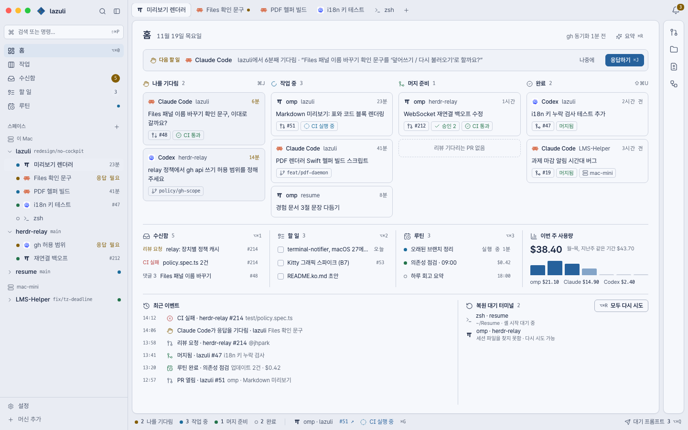
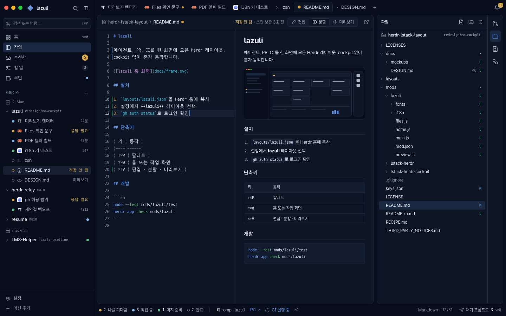
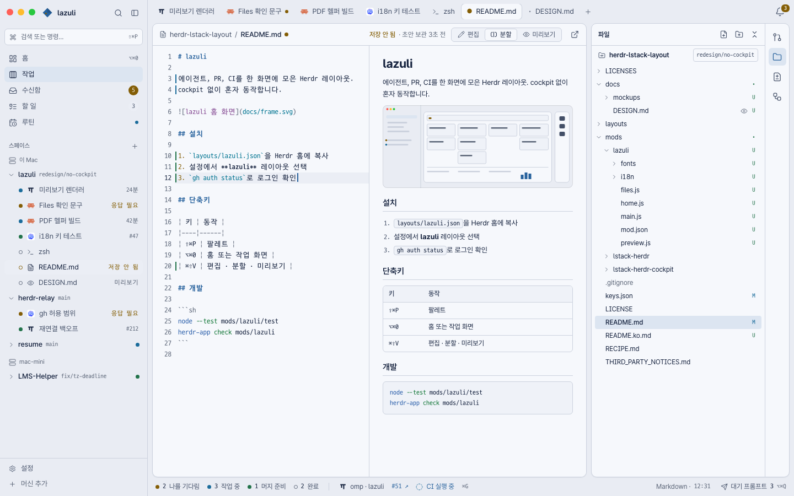
B · Cobalt information-dense IDE
- Edge-to-edge tiles split by 1 px rules, 26 px title strips, 2–4 px radii; D2Coding carries the data, Apple SD Gothic Neo the prose.
- The stage board becomes a pipeline matrix: one row per agent, a track across the four stages, PR and CI columns; events read as a filterable log.
- Shows the most per screen (8 agents, 15 events, spend heatmap, file outline) at the cost of 11–12 px type and more visual noise.
#0A1020#E4EAF5#4C93F0#F2994A#F5F7FB#0F1B33#1A5FC2
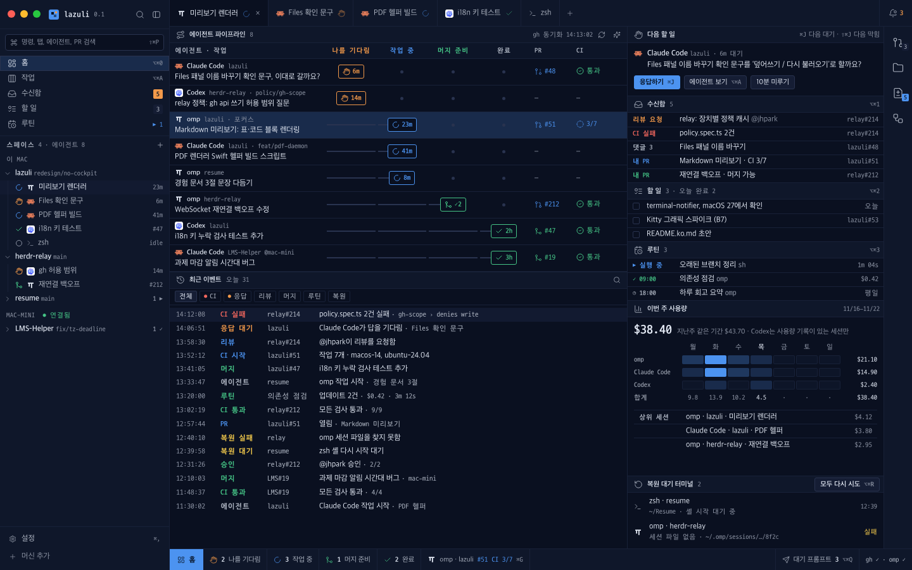
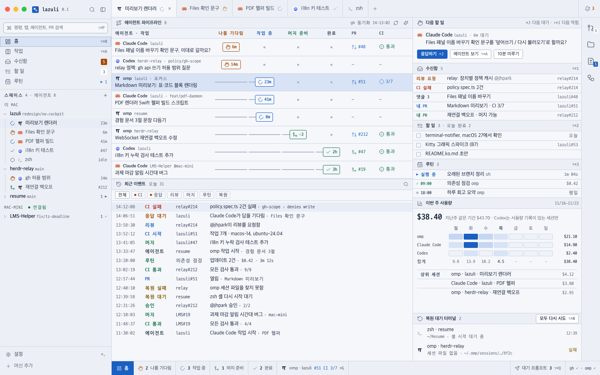
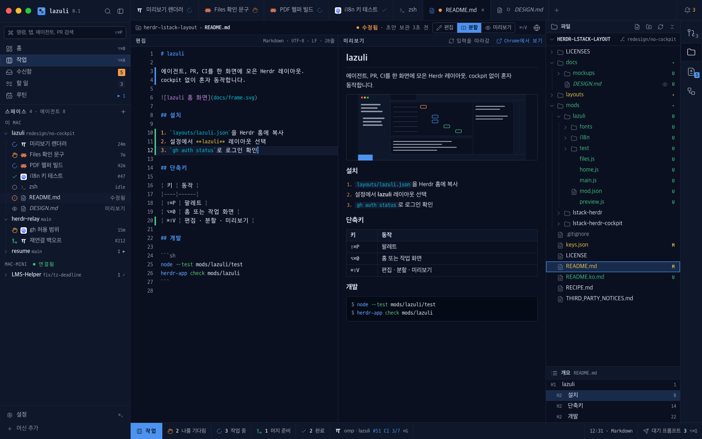
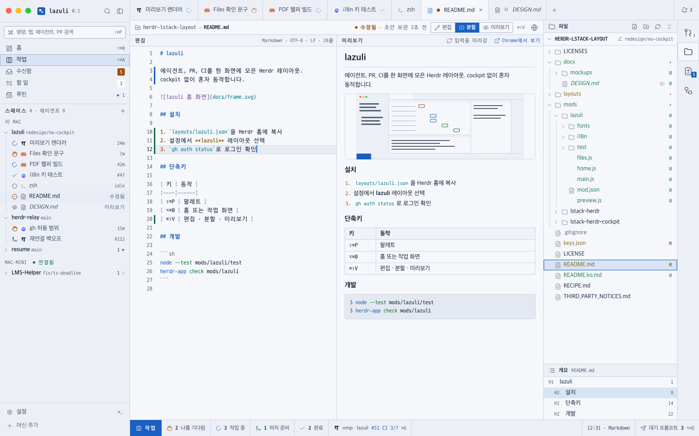
C · Denim warm editorial, light-first
- Home opens with one sentence: who is waiting and what they ask, set at 28 px, with the reply action right under it.
- Stages are horizontal bands led by large numerals; Inbox, To-do, Routines and events sit in a margin column ruled by hairlines, not boxes.
- Most readable (14 px base, 30 px rows; the preview is typeset like a page) but shows the least at once and needs the most vertical room.
#F7F4EC#1E2A44#35528F#D9895B#161B26#E9E4D8#8AA6DA
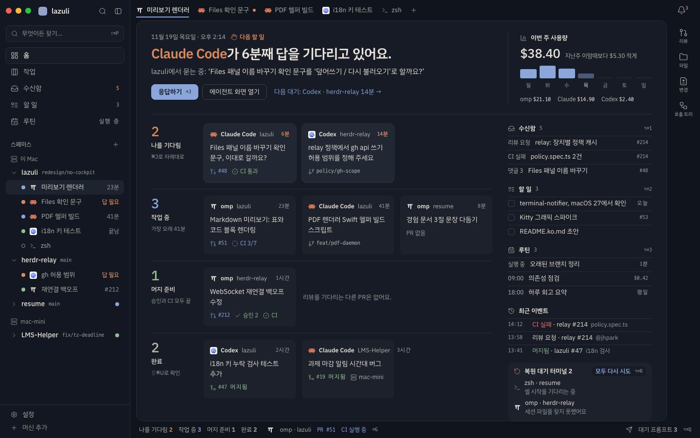
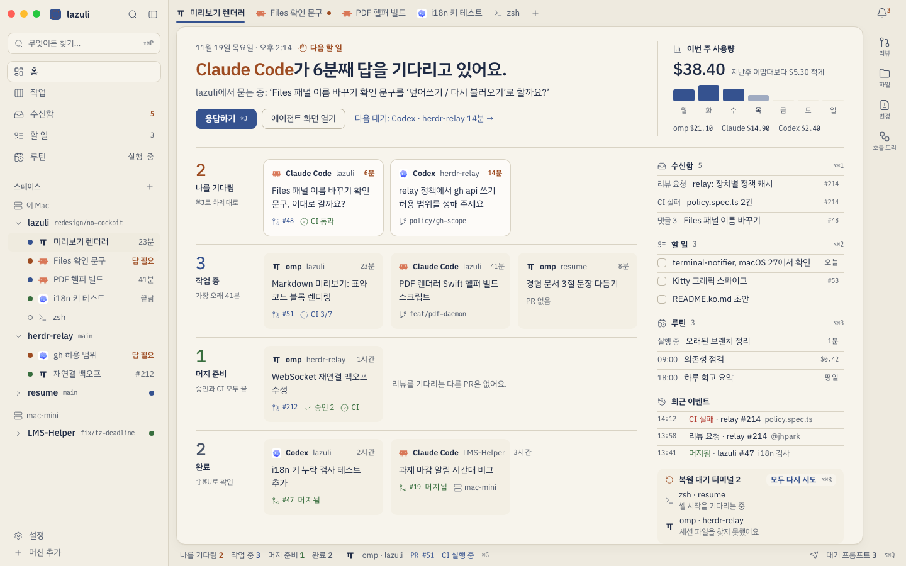
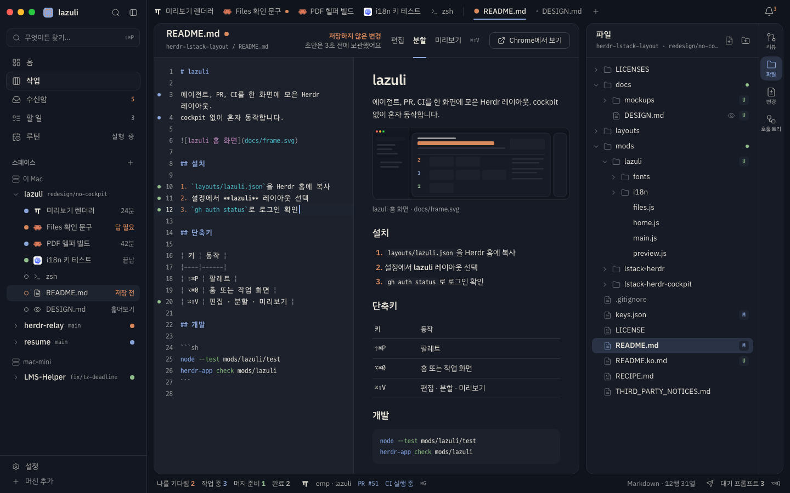
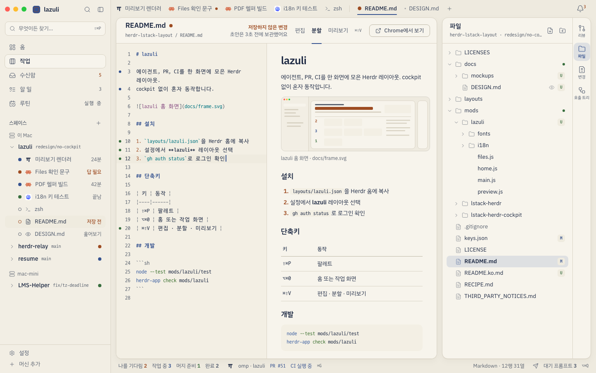